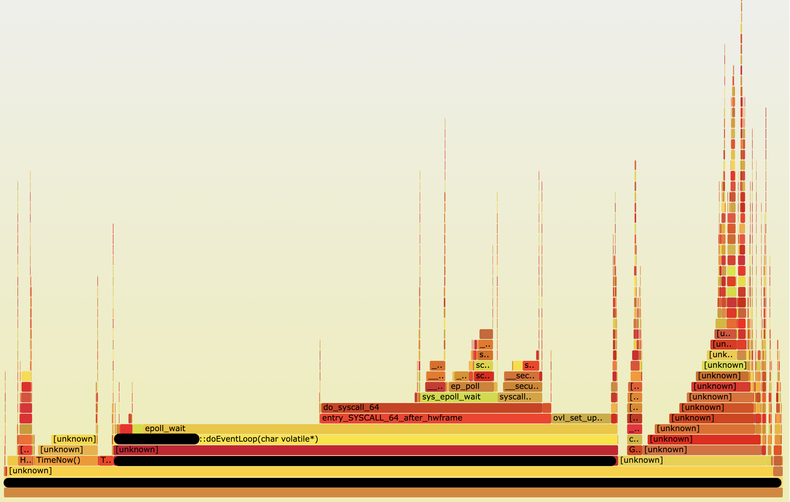
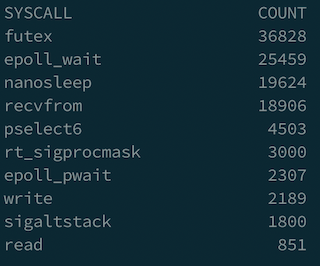

In this post, I’d like to share an experience that how I used BPF to fix a CPU saturation issue in a Go app. Especially this CPU saturation issue happened in the cgo level so that it’s really hard to detect the root cause.
Problem
A few months ago, I worked on cloud cost reduction and found out the CPU utilization of our streaming services kept 80% ~ 90% no matter how many clients connect to them. This is quite weird because normally the CPU utilization should be decreased when the total number of connections goes down. This also makes us not able to do further improvement like applying instance autoscaling according to different workloads.
Triage
Usually, we should be able to use go built-in profiling tool go tool pprof to track the CPU or memory issues. However, because this Go program highly depends on a C library, I was afraid that the bottleneck would be in the C code.
I recently enjoyed watching Brendan Gregg’s BPF talks and thought if we can use it to solve this issue. If you are not familiar with BPF, there are tons of great talks you can find on the youtube:
- Velocity 2017: Performance Analysis Superpowers with Linux eBPF
- YOW! 2018 Brendan Gregg - Cloud Performance Root Cause Analysis at Netflix
- LISA19 - Linux Systems Performance
BCC is a toolkit for BPF-based Linux analysis. BCC includes a lot of good tools helping us analyze the current system without writing the BPF program on our own. I’d highly recommend everyone should try to adopt some BCC tools because using those tools is so simple and useful.
In our case, I used profile.py to profile CPU usage. This profiling tool would take samples of stack tracing at certain timed intervals. It also provides a way to generate a popular Flamegraph format. The most interesting part is it can profile the running process by attaching a given PID. I thought this is really powerful when we need to investigate issues of the online system. I used the following command to generate the Flamegraph.
1 |
Here is what I got:

Before we dive into this chart, I want to note how to analyze this flamegraph. There are 2 important things when we observe flamegraph according to this book Linux Observability with BPF:
- The x-axis is ordered alphabetically. This represents the most frequent code consuming CPU in your system.
- The y-axis shows the stack traces ordered as the profiler reads them, preserving the trace hierarchy.
With this flame graph, it was now possible to see most CPU time spend on epoll_wait. Because it’s a streaming service, obviously it should adopt epoll to deal with many client connections efficiently. However, I didn’t expect this epoll_wait should be invoked so many times. I also try another BCC tool called syscount to count syscalls.
1 | syscount -p <my_progrom_pid> |
I saw the result like this.
Then I tried to use strace -p <my_program_pid> to observe what happened in that process. I did see a lot of epoll_wait invokations during process running as following.
1 | epoll_wait(4, [], 1, 0) = 0 |
I was so curious what’s the meaning of epoll_wait function arguments. I checked the man page and realized the signature of that function.
1 | int epoll_wait(int epfd, struct epoll_event *events, int maxevents, int timeout); |
It looks to me that the field timeout could be the key to this problem so that I need to figure out the definition of timeout.
Specifying a timeout of -1 causes epoll_wait() to block indefinitely, while specifying a timeout equal to zero cause epoll_wait() to return immediately, even if no events are available.
This is really interesting. I soon went back to check our code. It turns out that the value of timeout is not a fixed number but generated by another function. This function acted too aggressively and set up timeout as 0 in most cases. We also double-checked epoll_wait mostly returned nothing when the timeout is 0. When you write the code using epoll, the pseudo-code might be like
1 | while (1) { |
That means when timeout value is 0, it will create a busy loop and CPU time spent on here for nothing.
Fix
We did a quick small change to modify the timeout value to 1ms when the timeout value equals to 0. This change should reduce total number of invocation of that epoll_wait and following function blocks. We also deployed this fix both on the staging and production system to make sure video streaming still works smoothly. It was a remarkable moment when we saw the impact it had. We successfully reduced CPU usage from 6% to 1% on staging server. There was same trend on production services which improvement is around 30% to 70% deponed on different workloads.

After applying this fix, we tried to use syscount again to verify our system. As you can see the total number of epoll_wait is close to recvform, which means we save a lot of CPU time.

Conclusion
- BPF is a really good tool that can help us quickly identify the potential root cause of the problem. The benefit of using BPF is it only introduces very small overhead on your system.
straceis a very powerful tool too. Every programmer should learn how to use it. We can usestraceto observe system call of your program on the fly which can give us a lot of information to understand how our program works.- Encourage everyone to try other bcc tools to observe the online system. It’s really fun!
after I fixed this issues with BPF, my feeling is like

Reference
- Velocity 2017: Performance Analysis Superpowers with Linux eBPF
- YOW! 2018 Brendan Gregg - Cloud Performance Root Cause Analysis at Netflix
- LISA19 - Linux Systems Performance
- BCC tools
- https://medium.com/@copyconstruct/the-method-to-epolls-madness-d9d2d6378642
- https://jvns.ca/blog/2017/06/03/async-io-on-linux--select--poll--and-epoll/